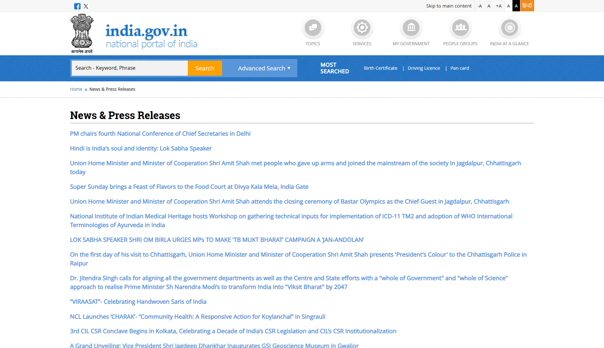
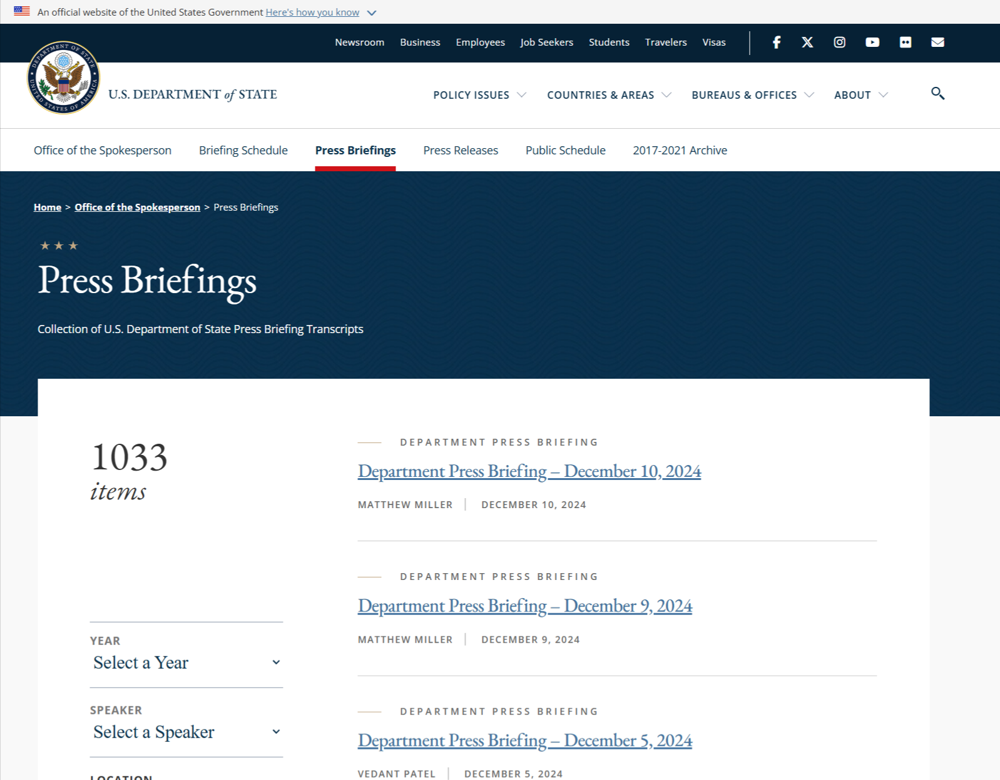

We will be comparing and looking at the indian and US press release websites


Fonts
The font used by both the websites are fairly decent and the readability are pretty much the same
Colors
Both the websites use fairly standard colors in their design the indian one uses a light blue color as the main color with some hints of orangish colors
The US website on the other hand uses a Deep blue color as the primary color and then hints of red in some places.
Icons
Both the websites use very minimal icon but we can see some instances of the usage, for example we can see the logos of the social media companies ex facebook, twitter/X
Images
Again here both the websites do not have a lot of images, the only instance we can see here is the image for the official government, for instance the US department of state and the government of India image/logo
Layouts
Now that we come to layout we can se very substancial Difference in the approach by both the websites
The indian website Layout is not very clear and the hierarchy of the website structure is not very clear, as we can see that the nav bar and the search bar is not unified
Another glaring issue with the indian website is that each new/different article is not properly differentiated with the usage of cards and the content is very cluttered making it very hard to search for specific content
We can also see that the website does not use proper margin and padding for its main body making the text very long horizontally
The indian website also has unrelaed content on the lage like most searched (birth certificate, driving liscence, pan card, etc) which is unrelated to the content of importance which is the press release
Where as the US website is a lot more clean and uses the screen realestate very efficiently by first dividing the page into 2 vertical sections, 1 for the filteres and nother for the article cards making it easy to navigate
We can also see that the website is a lot more clean looking with proper margins and padding added to every element, and everything is properly labeled making it easy to find what we are looking for